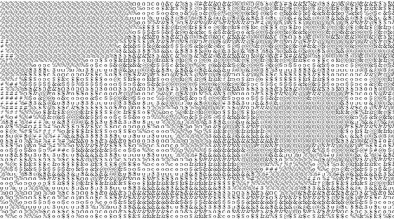
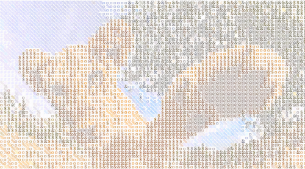
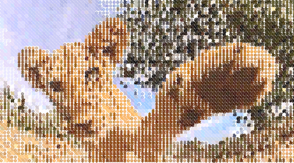
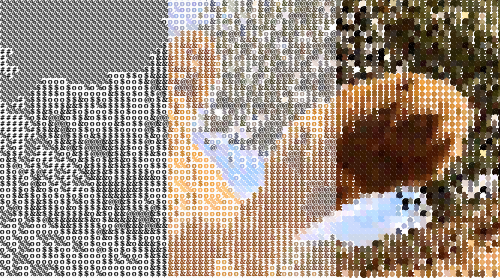
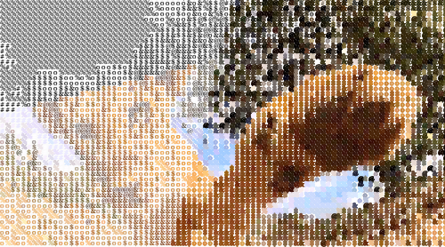

Video to ASCII
Change Pixels for Characters
Al igual que en el estudio de procesamiento de imágenes, que se vio el ejemplo IMAGE TO ASCII, se realizó la siguiente implementación que muestra cómo realizar el procesamiento de videos. Para este fin se crearon dos lienzos, el primero permite visualizar el video original que es capturado directamente de la webcam que tenga conectada a su dispositivo (permitir acceder a la cámara desde el navegador), de manera similar a la que se explica en la documentación de processing.org y, el segundo lienzo se encarga de mostrar los cambios que se le realizan en tiempo real dependiendo de las teclas que se presionen, según la tabla de comandos por teclado.
Este programa muestra los cambios que sufre un video al convertir sus pixeles por caracteres ASCII, darles color y contorno a los caracteres, utilizando el mismo algoritmo que permitió realizar el procesamiento de imágenes en el ejemplo descrito anteriormente, pero esta vez modificando los pixeles de una imagen capturada por video.
Comandos por teclado
| ASCII | Caracteres a Color | Bordes a Color | Transición Horizontal | Transición Diagonal | Video Original |
|---|---|---|---|---|---|
|  |  |  |  |  |  |
 |
 |
 |
 |
 |
Activar cámara Web |
Image of Lioness and her Lion cub (Panthera leo) are a species in the family Felidae. Source: Giphy.Lion Hello GIF - Find & Share on GIPHY
p5*js Code
let img; // Almacena la primera captura
let img_01;
let resolution = 6; // Determina la resolucion del caracter
let lienzo01; // Lienzo donde se mostrara el codigo ascii
let lienzo02; // Lienzo que mostrara el video original
const heightI = 512; // Define la altura de los lienzos
const widthI = 550; // Define la anchura de los lienzos
let letters = "@&$o%8#*+=-':. " ; // Cadena de caracteres ascii
let ascii=[]; // Almacena la cadena de caracteres
let intensity = 1; // Colores de los caracteres
function preload() {
img = createCapture(VIDEO);
img_01 = createCapture(VIDEO);
img_01.hide(); //Ocultan los videos
img.hide();
}
function setup() {
var myCanvas = createCanvas(widthI*2 + 20, heightI);
myCanvas.parent('asciiVideo');
background(255);
lienzo01 = createGraphics(widthI, heightI);
lienzo02 = createGraphics(widthI, heightI);
}
function draw(){
lienzo01.textFont("Georgia", resolution + 2);
lienzo01.background(255);
calcArray();
asciify();
drawLienzo02();
image(lienzo01, widthI + 10 ,0);
image(lienzo02, 0, 0);
}
// Funciones diseñadas
const calcArray = ()=>{ // Realiza el mapeo para almacenarlos en el array ascii
for (let i = 0; i < 256; i++) {
let index = int(map(i, 0, 256, 0, letters.length));
ascii[i] = letters.charAt(index);
}
}
const drawLienzo02 = ()=>{ // Diagrama el video en el lienzo 2
lienzo02.image(img_01,0,0);
}
const asciify = ()=>{ // Diagrama los caracteres en e lienzo 1
img.loadPixels();
img_01.loadPixels();
// Recorre todos los pixeles
for (let y = 0; y < img.height; y += resolution) {
for (let x = 0; x < img.width; x += resolution) {
let index = (x+y*img.width)*4; // Posicion del pixel
let r=img.pixels[index+0]; // Componente Red
let g=img.pixels[index+1]; // Componente Green
let b=img.pixels[index+2]; // Componente Blue
let a=img.pixels[index+3]; // Componente Alpha
// Componenetes sin modificaciones
let R=img_01.pixels[index+0]; // Componente Red
let G=img_01.pixels[index+1]; // Componente Green
let B=img_01.pixels[index+2]; // Componente Blue
let A=img_01.pixels[index+3]; // Componente Alpha
asciiPaint(R,G,B,A,x,y); // Color de los caracteres
// Toma el color del n-simo pixel y lo reemplza con el caracter de brillo similar
lienzo01.text(ascii[int(brightness(color(r,g,b,a)))], x, y); // Dibuja los caracteres
}
}
}
// Define el color de los caracteres ASCII
function asciiPaint(R,G,B,A,x,y){
if (intensity===1){
lienzo01.fill(0);
lienzo01.noStroke();
} else if (intensity===2){
lienzo01.fill(R,G,B,A);
lienzo01.noStroke();
} else if (intensity===3){
lienzo01.fill(R,G,B,A);
lienzo01.stroke(R,G,B,A);
} else if (intensity===4){
if (x>floor(widthI/3)){
lienzo01.fill(R,G,B,A);
} else {
lienzo01.fill(0);
}
if(x>floor(widthI/3)*2){
lienzo01.stroke(R,G,B,A);
} else {
lienzo01.noStroke();
}
} else if (intensity===5){
if (x/2+y*2>floor((widthI+heightI)/3)){
lienzo01.fill(R,G,B,A);
} else {
lienzo01.fill(0);
}
if(x*2+y/2>floor((widthI+heightI)/3)*2){
lienzo01.stroke(R,G,B,A);
} else {
lienzo01.noStroke();
}
}
}
// Se ejecuta cuando se presiona cualquier tecla
function keyPressed() {
if (key === '0') { // Imagen original
lienzo01.image(img_01,0,0);
} else if (key === '1') { // Caracteres en negro
intensity=1;
} else if (key === '2') { // Caracteres a color
intensity=2;
} else if (key === '3') { // Borde caracteres a color
intensity=3;
} else if (key === '4') { // Borde caracteres a color
intensity=4;
} else if (key === '5') { // Borde caracteres a color
intensity=5;
}
}